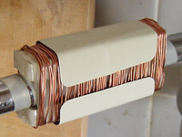
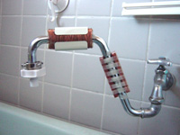
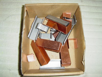
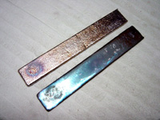
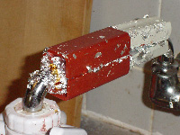

2004年１月１日
帰省するなり父が私に「戦場のピアニスト」を見せたいというのでレンタル屋に行ってきた。
弟も「あれはお兄ちゃんだ」と言う。（昨年の１２月２１日の日記参照）
残念ながら全て借り出されていた。
代わりにこれまで観たくて見逃してきた DVD を４本借りてきた。
「スパイダーマン」「マトリックス・リローデッド」「タイムマシン」「コンタクト」
（父は最近 5.1 サラウンドシステムを手に入れて自慢しているので
それを試してはしゃいでやるのも親孝行のひとつだろう。）
映画の感想は・・・そうだな、物理と関係ない話にコーナーを作って書くとするか。
2004年１月７日
仕事が忙しすぎて何もする気になれん。
楽しみにしていたサイトもほとんどが更新をやめてしまって面白くない。
みんな疲れてるんだよなぁ。
Work Hard なんて言葉は大嫌いだ。
日本人よ、そろそろ考え方を変えて Work Smart にしてくれ。
家族を守るために家族を捨てて働かねばならぬとは何たる矛盾。
2004年１月８日
今日気が付いたが、私のサイトの Google の PageRank 評価が３からいきなり５に上がっている。
知らない間に excite のカテゴリー検索に相対論のページが載ってるがこれのせいか？
ということは「look smart」に載ったということか。
これは自分で登録申請すると審査料取られるんだったよな。 ちょっと得した気分。
2004年１月１０日
友人が「もしも世界が１００人の村だったら」という本を古本屋で見つけて持ってきた。
これはネット上で広がった有名な話を本にしたものである。
私はこの話は面白いなと思ったが色々な理由であまり好きではない。
まあとにかく、それについて色々話しているうちに友人いわく、
「一人が機関銃を持っていて、あとの９９人は丸腰です。」
こんな村はもうおしまいだな、と思った。
2004年１月１２日
とうとう妻に根負けして「水商売」の話を聞くことになった。
（「水商売」というのは「おいしい水、安全な水」を売り物にしたビジネスの
少々非科学的な部分を見下した表現である。）
昔からお世話になっている人が家まで来て説明して下さった。
彼は１年半くらい前からサイドビジネスとしてこの商売を始めて、
あまりにも忙しくなったため本業にしたのだそうだ。
私は彼の顔色が前に見たときよりもはるかに健康的なので驚いた。
私は彼の説明の非科学的な部分を攻撃してやろうと思っていたのだが、
彼自身もその業界も本当のことはほとんど分かっていないのだ、ということがすぐに分かったため、
わざわざ攻撃する気も失せた。
知識をひけらかして細かいツッコミを入れるのは建設的でなく、大人気ないように思えたからだ。
事実、理論的に作ったものではなく「出来てしまった」ものらしい。
それよりも彼自身の使用体験に引き込まれてしまった。
確かに科学的実験としては不備な点が多いが、彼自身の人格と経験を信じる。
前から気になっていた彼の顔のシミが取れていたのも事実だし。
私はこの日、非常に落ち込んだ。
多分、彼をねたましく思ったのだろう。
私もその装置を試したくなっていた。
そのような有望なものを広めるのが物理学者ではないことがあまりにも悔しかった。
学識の無力さを知る。
2004年１月１７日
妻が例の超強力磁石（昨年の１２月２１日の日記参照）を３セット追加購入していたことが発覚。
それでも１セット3000円程度で私には格安だと思われるのでお咎めはなし。
台所だけでなく、風呂場とベランダの洗濯機にも付けて、もう一つはどこでも使えるように
ホースに取り付けて持ち運びしたいのだそうだ。
妻が気に入っている商品は水道メータの直後に工事して取り付けるものなのだが
多分、大家さんが認めてくれないだろう。 （光ファイバーでさえもだめだったし）
さて、風呂場に磁石を取り付けた結果、やはり今回も確かに味が変わるのだ。
以前は私が全く信じないでいやいや取り付けたので、後から
磁石をつけた台所と付けていない流しの水の味を比べたのだった。
（それでも以前はこの２つの味は両方とも不味いものだった。）
その点が科学的には非常に不備があると妻にさんざんぶつぶつ言っていたので、
今回はちゃんと取り付ける前と後の水を比べたのだが、味が変わったことは認めざるを得ない。
言っておくがこれはホームセンターで手に入るような磁石ではダメだ。
実際、少し前から妻が小さなアルニコ磁石（それでも普通よりは強い）を
風呂に付けていたがこれは分かるような効き目はなしだ。
2004年１月１８日
昨夜、妻とホームセンターへ行った。
息子（１歳）を店内で放し飼いにすると、磁石コーナーに愛着を感じて離れようとしないので、
妻が普段からこの店のこの辺りに足繁く通っていることが分かる。
この日は銅板を買いに行ったのだ。
妻のお気に入りの商品である磁化水装置では、磁束密度を高めるために
貴金属のコーティングをしてあるという。
これが特許部分で組成がよく分からないのだが、どうやら反磁性体だというのだ。
私は以前から「反磁性体にそんな磁力線を劇的に曲げる効果はないだろうよ」と言っているのだが、
彼女は聞く耳を持たない。
子連れで大学図書館へ行ったりして貴金属の磁気的な定数を調べまくったりしているようだ。
まぁ、反磁性に意味があるなら銅が安くていいだろうというので買いに来たのだ。
こういう店の銅板は必要以上に大きい上に割高だ。 家には加工する道具もない。
電子パーツ屋などがあればシールド用の安いものがあるのだろうがあいにくこの辺りにはない。
そこで、非常に安く手に入る銅線を買ってきたのだ。 一巻き90円を３束。
これくらいで妻を満足させられるなら安いものだ。
最近ではビスマスが欲しいと言ってネットで小口販売を探しているようだが、
私も彼女もビスマスがどんなものか知らない。
さて、ここからが本題だが、この銅線を磁石の上から巻いたのだ。
いや妻が巻き始めて途中でイライラし始めたので、私が仕方なく巻いてやった。
それで巻く前の水が取ってあるから飲み比べて見てくれ、と彼女が二通りの水を持ってくるのだが、
途中で妻が「あっ」と叫んだ。 どうせまた途中でどっちがどっちか分からなくなったんだろ、と思ったが、
そうではないらしい。
私も驚いたのだが、水の色が明らかに違う。
両方とも透明なのだが、比べるとはっきり分かる。
銅線を巻く前のものは赤っぽい。
味は変わらないように思う。
これはいよいよバカに出来なくなってきたぞ。
「水商売」の人が自らの体験で語っていた通りになってきた。
2004年２月９日
２週間にわたる海外出張から帰ってきた。
帰りの新幹線から自宅に電話すると、・・・出ない。
私の実家に電話すると、まだそこにいた。
（注：妻は自身の実家よりも私の実家に入浸る傾向があります。）
「いない方がゆっくり休めていいでしょ？」
俺の気持ちを全然分かっちゃいない。
2004年２月１０日
出張前の朝方までねばって書き続けていた物理の記事の続きを早く仕上げたいのだが、
今日も普通に仕事だ。
ああ、休ませてくれ。
2004年２月１１日
ようやく妻帰る。 我が子は歩けるようになっていた。
2004年２月１１日
建国記念日だ！
日本を愛している。 いや、愛せるような国にしなくてはならないと思う。
（アメリカでそこらじゅうに国旗がたなびいているのを見て
ナショナリズムを刺激されたようだ。
アメリカでの韓国人の勢いが凄まじいのにも強く印象を受けた。）
2004年２月１１日
時差の関係で朝早くに目が覚める。
本当は今朝のうちに、途中になっていた物理記事を仕上げて更新するつもりだったが、
どうやら出張中に妻が原稿を捨ててしまったようだ。
出張前に命がけでぎりぎりまで計算したメモだったのに。
めちゃくちゃ悔しい。
しばらくやる気失せる。
2004年２月１８日
「銀河鉄道９９９」のＤＶＤボックス買ってもいいか？と妻に探りを入れたところ、
「いいよ」と快い返事だ。
怪しい・・・。
妻が私に内緒で磁石の追加注文を入れているらしいことがこの返事で分かった。
こうして我が家の蛇口は次々にボーグ化されてゆく。

2004年２月１９日
元同僚のＨ氏より「テッカマン」のＤＶＤボックスを貸してもらった。
いや、こんなことばかりして遊んでいるわけではない。
ここしばらくは「クライン－ゴルドン方程式」に取り組んでいる。
簡単に式の導出だけして「負確率の問題から捨てられました」程度の説明をすれば
終わりだな、くらいに思っていたら結構奥が深い。
負確率を導くためには確率流密度の説明も必要だし、負エネルギーの問題点、
その説明のためには排他律も説明しておかなくてはならない。
量子場の理論に至るヒントもここに表れている。
予想外に面白いところだ。
2004年２月２３日
妻の活躍（暴走）を応援して下さっている方がいるようで・・・最近の行動を報告します。
これです。

テックセッター！！！（爆
まさかこう来るとは思わなかった。
「ちまちま性能を上げるより、数を増やした方が早い」
・・・だそうで、いかにも彼女らしいです。
この上から鋼鉄の鎧が装着されます。

鋼鉄の鎧は（有）広江工業 製です。
先日の出張の間に父の経営する工場で無料で作ってもらっていたようです。
ちなみに家業は真面目な弟が継いでいます。 彼はもうすぐ社長さんですね。
俺はこんなとこで何やってんだろ？
2004年３月３日
ああ、そうか。
コンプトン散乱の確率は場の理論で計算するんだ・・・。
大きさの無い粒子同士がどうやって衝突できるだろうと思っていたが、こういうことか。
それで摂動の高次の項はほとんど無視できて、あたかも１粒子対１粒子の散乱であるかの
ように「近似」できる、と。
「光子が E = h ν のエネルギーを持った粒子だ」なんてイメージは
ひょっとしてすごい誤解を招く表現なのでは・・・？
2004年３月９日
毎日来てくれる読者様方の期待を裏切りつつ、
更新もしないで場の量子論の勉強に集中していたが・・・、さっぱり分からない。
式はまぁ分からなくもないし、雰囲気も何となくつかめる。
しかし解釈が出来ん。 何か説明が抜けてるに違いない。
教科書によって言っている事が違う気がする。
だいたい私がよく知っていることでさえ
こんな分かりにくい書き方になっているのだから、
未知の部分を読み解くにはかなりの推理が必要なのだろう。
他の教科書も読んでみることにした。
ネット注文だからしばらくかかるだろう。
その間に書きかけの記事を仕上げるか。
（と言うより、ここしばらく記事を書くだけのテンションが得られなかったわけだが。）
2004年３月１０日

政情が不安定になると金持ち連中は財産を貴金属などに
替えて保管するようですが、
とうとう我が家でも延べ板を２枚ほど購入してしまいました。
ただし「ビスマス」です。 卑金属やん！！
融点が低いなんて教えるんじゃなかった。
多分次は電気炉が欲しくなるはずだ。
2004年３月１７日
面白いものを見つけた。
見せてやるから付いて来てくれ。
途中、変なところも通るが気にしないで。
Google のディレクトリ検索で、
「科学 > オルタナティブ科学 > 物理学」と進む。
するとどうだ。
そこにある「特殊相対論」はこのサイトのことではないか。
うーん、非常に誤解を招く説明文だ。
こんなものを見たら私でも「この人、馬鹿じゃん」と思ってしまう。
しかもサイト名全然違うし。
しかーし！ とうとう Google に載ったぜ！
しかも・・・俺はオルタナだぁっ！
何という誉め言葉。 切り開け！新世界。
今に物理を引っ繰り返して成り代わってやる！
・・・・・。 ε-(^､^; ふぅ
2004年３月２３日
我が家もようやくADSLを導入した。
しかし特に利点も無い。
遅くて困ってたわけでもないし、ネットゲームする余裕も無いし、
見たいコンテンツがあったわけでもない。
ちょっと面白そうなものはほとんど有料だが金を払う気は無い。
速度に対してISDNが割高だったから換えてみただけだ。
なんだか世の中つまらなくなってきたなぁ。
2004年３月２６日
ディラック方程式の話題を進めるためにスピンの話をしようと思ったが、
そのためには角運動量の予備知識が要る。
そのためには原子構造を知っていた方がいい。
そのためには「時間に依存しないシュレーディンガー方程式」が。
そのためには変数分離法が。
単なる計算テクニックは説明しないつもりだったんだが。
それよりも学生に需要があるのはきっと摂動論あたりなのだろう。
これも計算テクニックではあるが、
物理の考え方に影響を与えているものだから避けるわけにもいかない。
何から書こうか。 集中できてないな。
2004年３月２６日
昨日の深夜に悪霊に襲われて霊力を使い果たす。
一体を何とか退けたと思ったら直後にもう一体が来やがった。
くそ、舐められてる。
物理のサイトにこんなこと書いてもどうかとは思うが・・・。
2004年３月２９日
さすがに春休みだな。
ここのところ一日のアクセスが減り続け、とうとう３００件近くにまで落ちた。
１月末から２月に掛けての期末テストの時期には６００件を超えていたのに。
少し寂しい。
やはりこのサイトの読者の大半は学生だったのかと実感。
ま、その内新学期が始まれば授業に面食らった学生がやってくるさ・・・。
2004年３月３０日
最近真面目な解説ばかりになってしまって面白くない。
本当はもっと刺激的な話を書きたいのだ。
「量子力学をエネルギーの概念無しで構築する話」は
一体どうなってるんだと思われるかも知れないが、
今やっていることはそのための準備のつもりである。
しかし番狂わせは、私が別解釈を持ち出すまでもなく、
現代物理は元々そういう体系になっていたということだ。
私の理解が足りなかっただけである。
私に出来ることはその辺りを前面に出しつつ、
分かりやすくまとめることでしかない。
2004年３月３１日
何も面白いことが無い。
ネットＲＰＧにでも参加して我を忘れようかとも考えたが、
それさえも面倒くさい。
そんなものにはまって廃人のようになる自分を想像するのも忌々しい。
これは鬱症状なのだろうか。
悪霊どもに襲われた理由が分かる気がする。
心が隙だらけだ。
2004年４月８日
最近は量子力学の哲学的側面を深く考えている。
意外にも場の理論の導入のヒントがこんなところにあった。
2004年４月１０日
いい加減、人の命の重さと地球の質量を比較するのはやめてくれ。
単位が違うから。
2004年４月２２日
何かわけの分からないものになりつつある。
磁石をびっしり取り付けるより、
「磁気をかける部分」「かけない部分」を繰り返した方がいいのだという。
本当かな？ もう俺には分からない。
もう浄水器を通さなくてもおいしいし。
妻はどんどん磁石を追加注文している。
2004年４月２９日
連休の始まり。
家族サービスで行楽へ。
日焼けした。
土曜日から連休が
始まるものかと思ってこの予定を入れておいたのだが、
突如、休みは明日からと言われた。
きつい日程になりそうだ。
2004年４月３０日
里帰り開始。
私の実家を経由して妻の実家へ。
2004年５月１日
妻の実家の田植えの手伝い。
たまにはこうして汗を流すのもいい。
健康的にすぐ眠れた。
2004年５月２日
田植えの続き。
いいなぁ、暇を見つけて休憩してても誰にも咎められない。
むしろそうやって体力を温存しておかないと迷惑になる。
風も強くなく、日差しもきつくなく、いい天気。
おケラやカエルと戯れる。
妻は気持ち悪いほど優しくて別人のようだ。
農家育ちで、畑仕事をする男には当然そう接すべきだと
小さい頃から刷り込まれているらしい。
これだけで生きていけるのなら毎日やってもいいのになぁ。
でも田植えなどはこの時期だけのことだ。
これだけで生活できるほど甘くないのは知っている。
減反で毎年仕事が少なくなっていってる。
今年はこれだけで作業終了。
2004年５月３日
私の方の実家へ戻る。
足場に出来る中間位置にあるので
長距離を一気に移動せずに済む。
ここで体力を取り戻すのだ。
前から父に勧められていた「戦場のピアニスト」を観る。
主人公は別に私には似てなくて、
学生時代にひげ面だった時はあんな感じだったというだけだ。
主人公の思想も特に感じなかったし。
まぁ私は将来ああいう目に遭いそうだという気はした。
軍事体制の中でうまくやっていけそうには無い。
2004年５月４日
やっと物理の記事を書き始められるぞ。
部屋に閉じこもる。
しかし、明日にはまた移動せねばならぬ。
自由になるのは今日だけだと思うと焦ってしまい、
あちこちの記事に手を付け、どれも中途半端。
夕方には疲れて寝てしまった。
本棚に「坊ちゃん」を見つけて一気に読む。
これまで読んだことが無かった。
何でこれが名作なんだ？
仕事が午後３時に終わっても
すぐに帰れないとか文句言ってるし。
いい時代の話だな。
2004年５月５日
憂鬱と疲れで動けない。
夜に移動。
また明日から会社だ。
こうして楽しみだったはずの連休は終わる。
2004年５月１８日
映画「キャシャーン」を観てきた。
鬱のままではいけない。
バカ映画でもいいから軽い気持ちで楽しませてくれ、と
仕事帰りに深夜ショーに行ったのだが、めちゃめちゃ疲れた。
キャシャーンを騙った低レベル洗脳映画。
むしろこの怒りをバネにして復活できそうかも。
2004年５月１７－２０日
常に叩かれていないと不安になる。
自分は正しいだろうか？ 間違っているのに無視されているだけではないか。
いつか根本から覆されるのではないか。
だから、ずっと批判を待ち続けていたのではあるが、
何もこんなにやる気を失った時期に来なくても！
「とある人」と名乗る専門家らしき人から掲示板で痛烈な批判を頂いた。
今は戦えないと思った。
弱り目に祟り目。
こんな目に遭うのは弱みを見せたからに違いない、と心が私に訴えた。
「根本から覆される！」という隠れていた恐怖が湧き上がった。
無理に気合を入れた結果、多少攻撃的になったわけだが、本当は待ち望んでいたことだった。
多くの人が助けてくれたが、それはやはり私が弱っているのが
丸分かりだったからだろうな・・・いかんいかん。
って、よく考えたら自分で掲示板に弱音吐いてたわ・・・。
2004年５月２４日
今回の疲れ方は怖い。
俺が鬱になること自体信じられないし、
受け入れたくもないことなのだが。
以前の疲れは、
「死への恐怖心」や「社会倫理の観念」が非常に
薄らぐようなタイプのもので、
理性の歯車を無理やり回し続ける必要があった。
自分が発作的に何かをしてしまわないかというのが
怖かったが、それだけ生きることへの執着が感じられた。
ところが今回の疲れは、何に対しても逆らう気力がなく、
ただただ現状を受け入れ、一切の向上心が失われるタイプのものだ。
心の中のもう一人の声も長らく消えたままだ。
言語による意思決定のチェックシステムが消えたことを意味する。
私の問いは心の中で虚しく反響するだけだ。
多分、心が自己防衛のために何かを切り離したのだろう。
何もつらくない分だけ、こちらの方が怖い。
怖さを感じないことが怖いのだ。
2004年５月３１日
溜め込んできた膿を吐き出さないとこれ以上先へ進めない。
未発表の記事が色々あって、それらが気になって集中できなくなっている。
今回発表した「投げ銭」の記事もその一つだ。
一年以上前からあれこれ調べてはごちゃごちゃと書いては来たが、
そのまま出したのでは鬱陶しいだけだった。
かなり省くことになったが、今回の発表でちょっとすっきりした。
自分の利益なんかどうでもよくて、
これは、もう少し世の中が楽しくならないかというチャレンジなのだが、
そのためには自分が成功しないと誰も続かないだろうし、難しいところだ。
投げ銭の催促に見せかけた現行のシステムへの批判でもある。
誤解されないか不安だがわざと誤解されるように狙った部分もある。
2004年６月２日

我が家はとうとう本物の金を購入した！
とは言っても金箔だ。 銀箔も買った。
無駄だからやめろと言ってあったのだが・・・。
磁気処理水の特許によると金銀の合金が使われているのだそうだ。
丸めたら鼻くそほどにもならないもので数千円。
その結果がこれだ。
どんどん剥がれてゆく。 汚い。
2004年６月３日
量子力学の記事に行き詰まった。
技術的部分だけならまだ書けそうだが、何か足りない気がする。
そこで哲学的部分を調べ始めたのだが、
何が問題となっているのかさえ分からない議論に巻き込まれてしまった。
観測に関わる議論はもっと論点をはっきりさせられないだろうか？
これでは自信を失ってしまう。
2004年６月４日
気晴らしに熱力学の記事をいくつか書き始めたわけだが、
これまた細かいことにごちゃごちゃとうるさい学問だ。
分かり易く書き直すと意外なところで表現に落とし穴がありそうで、
慎重になってしまう。
どの教科書もその辺りをやたらと恐れているように思える。
学生時代に教官に勧められて買った教科書なのだが、やたらと回りくどい。
残念ながらまだ発表できる段階ではない。
2004年６月５日
磁気処理水の装置を買うことにした。
もう面倒くさい。
価格に見合う効果を認めたわけではないが、
妻が満足するならそれでいいじゃないか。
それに日本の円もいつ価値を失うか分かったもんじゃないからな、と言い訳しておく。
ひょっとしたら健康になれるかも知れないし。
妻の金銭感覚は、「欲しい→いくら？→払えるか→払える→買う」という流れしかない。
「その金額を払うだけの価値がある商品か」という判断過程がないのだそうだ。
初めは信じられなかったが、世の中を知っていく内にそういう人が実は多いことが分かってきた。
俺としてはどうせ同じ金額を払うとしたら
「タイムドメインスピーカー」の方が
いいと思うのだが。
2004年６月７日
一ヶ月前から疲れきって書けなかった部分の日記を一気に（後から）書いた。
ずっと気になっていたのだ。
気になると言えば、以前、ＮＨＫの「うたっておどろんぱ！」が面白いと書いたことがあるが
（2003年9月19日）、その頃から全く面白くなくなってしまっている。
「見てみたけど、つまんないじゃないか」と言われると困るなぁ、とずっと思っていたのだ。
でもＤＶＤはお勧めできる。
2004年６月９日
すげぇーっ！ 本当に来たぁ！
初めての投げ銭を貰ったのを今朝確認した。
今日はこれでずっと幸せだ！
アットペイによる送金では
７日間のクーリングオフ（？）期間があるので
金額はまだ確認できないが、そんなことはどうでもいい。
わざわざ投げて下さった方がいらっしゃるのだ。
2004年６月１０日
今日も投げ銭来たぁ！
今度はジャパンネット銀行の方へ１５００円も。
わざわざＡＴＭまで足を運んで下さったのだろうか？
ありがとうございます。
教科書の印税に換算すれば５冊分くらいだろう。
今は負ける気がしねぇ。
（このセリフ、前から言ってみたかったんだ。）
2004年６月１５日
昔作った科学史の資料を公表しようと少し前から考えていた。
ゲーム用に作って結局日の目を見なかったものである。
元がゲーム用なのでインタラクティブな作りにしたい。
それで今さらだが、初めて Javascript を学び始めた。
思っていたより簡単そうだな。
2004年６月１６日
昨日作り始めたスクリプトの原型は出来あがった。
あとはデータの打ち込みだけだが、
資料は実家にあるのでお盆休み以降になるだろう。
2004年６月１７日
ここ数日、いきなりドキドキすることが多い。
別に恋をしてるわけではないので、これが多分「動悸」というやつだろう。
左下まぶたが誤動作したり、
左上腕筋が勝手にブルブルして止まらないもんだから、
どうして心臓の筋肉は平気なんだろう？
もし心筋が誤動作したら大変なことになるんじゃないか、
と疑問に思っていたところだ。
疑問が晴れてすっきりした。
2004年６月２０日
ちょっと前から誇らしげに紹介している
「昔作った科学史資料」を実家から送ってもらった。
A4の紙30枚程度に色々なことが書きなぐってある。
聞き覚えのある単語、完全に忘れていた単語。
あとは簡単な説明と多数の記号。
何て事だ・・・読めぬ。
前後関係が全くつかめない。
当時の私はこれを見ながら入力作業をしていたので分かっていたに違いない。
もう一度調べ直さないといけないことだらけだ。
笑えたことがある。
「SF的未来技術」として分類してある中に、
「平面ディスプレー」「液晶プラスチック」
「ヒトゲノム解析」「制限酵素」「DNA増幅」「タンパク質工学」
「電子マネー」など、今ではお馴染みの単語が並んでいた。
何を思ってここに分類したんだ？
1997年当時はまだそういう感覚だったのだろうか？
確かまだポケベルの時代だったしな。
2004年６月２４日
「量子論の発展史」（ちくま学芸文庫）を読み終わる。
大まかな流れは理解しているつもりでいたが、
思想の変遷については思っていたのと全然違った。
シュレーディンガー方程式についての私の説明も
後の方の論文で取られた方法であって、
初めの思いつきは違う方向から為されたらしい。
本当は観測についての解釈の話を知りたくて
読み始めたのだが、その辺りの収穫はあまりなかった。
2004年６月２６日
日経サイエンス８月号。
ビッグバン以前を語れる可能性が見えてきたらしい。
宇宙はビッグバンで始ったのじゃなくて、それ以前からあったと。
それほど目新しい内容でもなかったが、
こういう話が記事になり始めたことが新しいと思う。
私の信条から、宇宙に始まりや終わりがあるとする説には非常な抵抗があって、
定常宇宙説や振動宇宙説をひっそり模索してきたのだが、
これでちょっと気が楽になった。
「定常宇宙説」というとそこらの人が怪しげな説を好き勝手主張している
こともあって肩身が狭かったのだ。
立場が悪くなるだけで迷惑だからもうちょっと慎重にやってくれ、と
思うことがよくある。
こういう記事を味方につけて「そら見ろ、ビッグバン説は誤りだ！」
などと声高に主張するのも恥ずかしいからやめて欲しい。
2004年７月１日
目標。
３ヶ月で熱力学を完成させる。
次の３ヶ月で統計力学を完成させる。
つまり年内にけりをつけて量子力学に戻る。
ちときついか？
2004年７月１２日
熱力学のこんな初めの方で時間を取られてしまうとは。
ごまかしを避けてあれこれ細かいことを調べているうちに、
色んなことを学んで、それらを取り入れている間に分量が増えてしまった。
2004年７月１７日
実家で科学史の資料の残りの部分を見つけた。
前の資料はこれを補完するものだった。
かなり分厚い。 参考になりそうだ。
2004年７月２１日
掲示板をフロート型に変更しようと企んでいる。
しかし他にやること多すぎ。 会社からも帰って来れない。
2004年７月２２日
今回の熱平衡の記事は我ながら良く出来たと惚れ惚れする。
発表を遅らせて何度か書き直してきたわけだが、ようやく言いたい形にまとまった。
第０法則については簡単に一言だけで済ましてある教科書があり、
そういうのを見ると「本当にそれだけの理解で大丈夫なのか」と不安を感じていた。
一方「実は非常に深い意味がある」ことを匂わせて「温度の巨視的一意性」云々と
難しげに書いてある本もあり、そういう表現に出会うたびにストレスを感じていた。
要はこういうことだろ？
2004年７月２３日
映画「スチームボーイ」を見に行った。
失敗だった。
それよりも「ハウルの動く城」の予告編の方が良かった。
鳥肌が立って涙が出そうになった。
あまり期待してなかったのだが、これだけで癒されてしまった。
2004年８月１日
科学の裾野はもっと広くなれ。
科学のレベルはどんどん高くなれ。（トップページより）
2004年８月２日
熱力学の第１法則を説明し終えたので、
すぐにそれを使って比熱やエンタルピーの話へ向かうつもりだったが、
第２法則の話に直行することにした。
これまで第２法則はもっと難しいものだと思っていたが、
ここまで来ればすぐにでも説明できる内容であると気付いたからだ。
一気に核心部を攻め落とす！
手持ちの教科書とは違うやり方であり、
私の中の天邪鬼がとても面白がっている。
2004年８月３日
いやしかし、先にカルノーサイクルや断熱過程の話が要るだろうか？
熱機関の実例もないままトムソンの原理は突然過ぎないか？
だとするとその前に比熱の話か？
似たような話をあちこちに分けるのは嫌だなぁ。
2004年８月５日
何だか旨くまとまってしまった。
初めに予定したのとは全然違う順序だが、面白くなりそうだ。
熱力学がこんなに簡単だったなんて。
いや、まだほんの基礎だが。
それにしても今回は・・・数式も図も使わずによくもここまで
分かりやすく書けたものだ！ ひゃっほう！
下手に図があるとかえって分かりにくいぞ。
2004年８月１５日
妻との会話。
「何やってるの？」
「ん？ あー、暇つぶし。」
「他にもやることあるでしょ？」
私はおもちゃの粘着部分に付いたほこりをちまちまと取っていた。
「確かに潰さなきゃいけないほど暇ではないんだが・・・
しかし物理をやるとお前すぐ機嫌悪くなるし。」
しばらくの間。
「変だ。 お前は俺が真剣に何かやっていると怒るが、
どうでもいい事をしている時には平気だ。」
「ああ、今分かった！
あなたが物理をやってると、声掛けちゃ悪いと思ってストレスが溜まるのよ。
でもこういう時って心はこっち向いててくれる気がして。」
「いつも何で責められなきゃいけないんだろうって思ってたよ。」
物理に限らず、私が有意義な時間を過ごしたと思って
清清しい気分でいると、妻の機嫌は悪くなる。
2004年８月１８日
前から気になってはいたのだが、
Google で「物理学」を検索すると私のページは１ページ目に表示してもらえる。
しかし「物理」で検索するとかなり後ろまで調べてもずっと出てこない。
どうやら Google では「物理」と「物理学」を別単語として
扱っているようである。
「物理学」として認識されると「物理」からは排除されるようだ。
ところで熱力学のページだけが、ランク０のままだなぁ。
誰からもリンクされてないからか？
早く１ページ目に表示されるようにならないかなー。
2004年８月２３日
深夜残業は今でも変わらないのだが、
最近は何だか以前よりも楽になっている。
なぜだろう？
もう慣れてしまったのだろうかと不思議に思っていたが、
「家庭を顧みないことに対する罪悪感」が
いつの間にかすっかり消え失せていることに気が付いた。
かつて自己防衛のために心の一部を切り離した、などと
表現していたこともあったが、
こんなに大切なものを切り離していたとは気付かなかった。
家庭ってこんな風にして崩壊して行くんだなぁ。
自分は悪くないなんて思いながら・・・。
2004年８月３０日
ギブスの自由エネルギーまで構想は出来ている。
発表する勢いがない。
2004年８月３１日
すごいことになった。
熱力学がこんなに美しかったなんて。
際限なく現れる関係式を見て
これまでずっと混沌だと思っていた。
これを読めば、誰もが感動するはずだ。
未完成だがこの勢いで全て発表。
2004年９月１日
投げ銭の決算を更新。
物理だけでは食っていけないな、やっぱり。
まぁ、幾つかの出版社からお声は掛けてもらっているわけだが、
もし本業として本を書いても食っては行けまい。
2004年９月２３日
本当に久しぶりに、何の憂いもなく休める一日を得たので、
妻の許可を得て図書館に一日中こもることにした。
資料に囲まれながら、精神集中して溜まった記事を一気に書き上げる、
この素晴らしい光景を何度夢見たことか。
ところが大学図書館にあったような個人用デスクもコンセントも
なかったし、PC使用について何の注意書きもなかったので、
許可を得ようとフロントまで行くと、
「あー、ダメダメ、禁止。 PCの使用は一切お断り！」
なんて追い払うような口調で叱られてしまった。
まるで私が悪いことをしようとしているかのような言い方じゃないか。
そんな常識外れな要求か？
今時、何て進歩の遅れた街だろう、と憤慨しながら帰宅した。
しかし泣き寝入りはしない。
「良き市民」として市に改善を求めるメールを出しておいた。
その後、普段の疲れがどっと噴き出したので、寝た。
いや、ふて寝じゃない・・・と思う。
2004年１０月１日
9月27日に当サイトの掲示板で、高２の hayato さんから
摂動について質問の書き込みがあった。
摂動論くらい簡単だからすぐに記事を書いてやろうと、
それ以来、返事も書かずにひたすら記事を準備。
予想外のところで疑問が出てきて行き詰まり、
この２日ほどはずっと考え込んでいたが、
今日になってやっと納得の行く答にたどり着いた。
待ってろよ～、hayato！・・・ってもう遅すぎか。
見てないかも。
数式画像を作るのにあと３日はかかりそうだ。
2004年１０月５日
摂動論の記事がようやく書き上がる。
最近、このために睡眠時間をかなり削った。
テキストだけのサイズは他の記事の２倍。
数式はかつてないほどの量だった。
2004年１０月６日
この勢いで縮退のある場合の摂動論も書いてしまおう。
技術的なことの解説はなるべくしないつもりだったが、
熱力学の解説を書いている内に、
（熱力学は解釈ではなく技術的なことが多いので）
そういう抵抗感が薄れてしまった。
2004年１０月１８日
９月までで熱力学を完成させ、今年中に統計力学を・・・
と計画していたが、摂動論に関わってから予想外に時間を取られている。
熱力学を年内くらいに仕上げるように計画を変更した方がいい。
初めに考えていた以上に先があることを知ったし、
そこまで行けるだろうという気にもなった。
2004年１０月２０日
統計力学の導入記事を書き始めたが、
全体のつながりを把握するのにもう少しの研究が必要だと感じた。
掲示板で黒体放射の質問があって以来、
統計の方に関心が強まっていたのだが、
やはり熱力学を優先すべきだろう。
2004年１０月２３日
やっと「縮退のある場合の摂動論」から解放されたぁー！
１次のエネルギーを求めるくらいの計算は知っていたが、
「細かい部分の理由」を掴むのにこれほど苦労するとは。
教科書によって記号の使い方が違うし、
一般化しようとして記号の区別が分かりにくくなっているものもあるし、
凶悪なもの（多分孫引きの継ぎはぎだろう）だと
縮退のない場合で使った記号を断りも無く別の意味で使っていたりするし、
頼りの演習書では説明が省かれていたり、
途中までの計算で満足してしまっていたり、
ごまかすために根拠のない話がさらりと書かれていたり。
流儀の違う複数の教科書から「共通点」を見つけ出す作業と、
あるはずのない根拠を探る「犯人探し」とに時間を割かれてしまった。
人災だと思う。
見て分かるように理論自体は難しくない。
分かってみると「なぁーんだ」で済む話だ。
感謝して読め。
2004年１０月２５日
偶然、量子力学の書きかけの原稿に目が留まった。
よく出来ていたのでそのまま一気に仕上げた。
不確定性原理についての記事を書く前に作ったものだったので、
細かい部分に不安があって未発表になっていたのだった。
出来上がってから調べてみると、その原稿は最新ではなく、
もっと最近書かれたものが見付かった。
しかしこちらは色々詰め込みすぎて読みにくく、
バランスを欠いてしまっていた。
それでずっと未発表にしてあったのだということを思い出した。
「３次元の波動」というやつがそれだ。
2004年１１月１１日
仕事が終わって帰ろうとしたら雨が思ったより強かったので、
ロビーで一時間ほど読書。
最近、サイトの更新はしていたが特に勉強できていたわけではない。
この集中した時間のお陰で、熱力学の全体像がようやくつかめた。
これは面白い！
多相系のところなど、学生の時にはただただ面倒臭いだけだと思っていたのに、
こんな面白い世界が広がっていたなんて。
この感動をどうやって伝えられるだろう。
2004年１２月９日
熱力学で長年妄信していたことが覆りつつある。
今の段階で記事にしていいものか、
もう少し先まで学んでから発表した方が無難だろうか。
あまり読者を待たせたくもない。
本当に間違っていたのかどうか、今、検証している。
2004年１２月１２日
あああ！ まただ！
Google で「熱力学」を検索したときに「ＥＭＡＮの熱力学」が１１０番目にまで落ちている！
前も１３番目まで登りつめて、「あとちょっと！」とがんばって
記事を追加した翌日に１２０番代まで一気に落ちたことがある。
でも Google ではアルゴリズムの変更なんかでこんなことはたまにある。
そう考えて気にしない振りをして、
・・・そんなつまらないことで醜態を晒すのはよそう・・・と言い聞かせて
日記にも書かず、更新を続けて、またじわじわと１１番目まで上がってきて、
もうすぐ１ページ目に載るぞ！と思っていたらこれだ。
単なる密かな目標、密かな楽しみ程度のことなのだが、ちょっと悔しい。
どうしてそこらへんのシラバスにも負けるかなぁ？
何かペナルティを食らうようなことしてるだろうか？
３度目ともなると心配になってくる。
見てろよ。 正攻法でいつかトップに躍り出てやる。
2004年１２月１３日
本当に久しぶりに、前世の仲間の夢を見た。
どれだけ大人になろうとも、奴らに囲まれている限り、
俺は自分を子供だと思える。
2004年１２月１４日
一昨日書いたGoogleの表示順位についてだが、
今日の昼に見たらいきなり８番目にまで上がっていた。
こりゃすごい！
要らぬ醜態をさらしてしまったな。 まぁいいや。
もし良かったら、一時期は初めのページに入っていた「EMANの量子力学」の方も、
最近ではずっと80～110番をうろうろしているので
何とかしてもらえませんかな？
2004年１２月１５日
おいおい、何だよ？ また熱力学、107番目に逆戻りだ。
Google社内でＥＭＡＮの物理学の評価をめぐって
いざこざがあるのではあるまいな？
2004年１２月１５日
熱力学の記事が遅れている理由。
難しい内容を書いているわけではない。
ただ、これまで正しいと信じていた誤った体系を
雄弁に覆すことが難しいだけだ。
私が誤解してなければ触れることもなく通り過ぎただろう内容だ。
2004年１２月２３日
妻へのクリスマスプレゼントのついでにネットで教科書を購入。
以前に掲示板で観測問題について論じていたときに勧められた
清水明先生の「量子論の基礎」という本。
今は別の問題で頭を悩ませているので読むのはずっと先になると思う。
2004年１２月２８日
来年は「世界物理年」だ！
・・・ということを思い出し、
日本語サイトを探して見て来たが、いまいち盛り上がってない様子だ。
内容もみんなPDF文書でお堅いし、何をやるつもりだかよく分からない。
個人会員に登録してみるのも面白いかなー、と
登録フォームを開いてみたけれど、あまりに堅いので逃げ出してきた。
国連のサイトを調べてみたら、
誰かの主導でお祭り騒ぎをする年ではなく、
それぞれが盛り上げる努力をする一年だということで、
ちょっと誤解していたようだ。
2004年１２月３０日
里帰り。
ネットから切り離された俺は余りに無力だ。
休み中に熱力学で悩んでいる問題を解決して記事を書き上げてしまいたい。
|